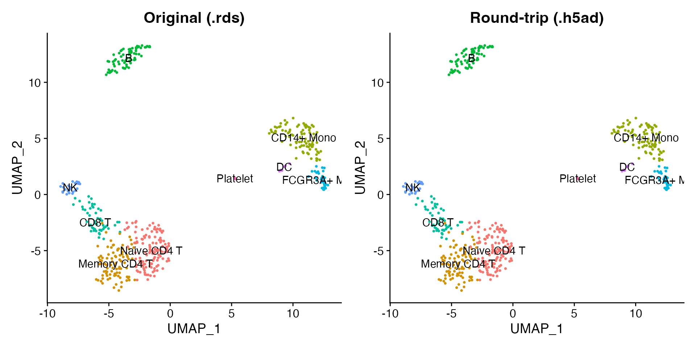

The h5ad format is the standard file format for the Python single-cell ecosystem (scanpy, scvi-tools, CELLxGENE). scConvert reads and writes h5ad natively in R with no Python dependency, making it easy to move data between Seurat and the entire scverse stack.
Read an h5ad file
scConvert ships a 500-cell PBMC dataset in h5ad format.
readH5AD() loads it directly into a Seurat object – no
intermediate conversion step is needed.
h5ad_file <- system.file("extdata", "pbmc_demo.h5ad", package = "scConvert")
pbmc <- readH5AD(h5ad_file)
pbmc
#> An object of class Seurat
#> 2000 features across 500 samples within 1 assay
#> Active assay: RNA (2000 features, 2000 variable features)
#> 2 layers present: counts, data
#> 2 dimensional reductions calculated: pca, umapInspect the loaded object
The reader reconstructs the full Seurat object from the h5ad contents, including metadata, dimensional reductions, and neighbor graphs.
cat("Cells:", ncol(pbmc), "\n")
#> Cells: 500
cat("Genes:", nrow(pbmc), "\n")
#> Genes: 2000
cat("Reductions:", paste(names(pbmc@reductions), collapse = ", "), "\n")
#> Reductions: pca, umap
cat("Metadata columns:", paste(colnames(pbmc[[]]), collapse = ", "), "\n")
#> Metadata columns: orig.ident, nCount_RNA, nFeature_RNA, seurat_annotations, percent.mt, RNA_snn_res.0.5, seurat_clustersThe nine annotated cell types are preserved as a factor column:
DimPlot(pbmc, reduction = "umap", group.by = "seurat_annotations",
label = TRUE, pt.size = 0.5) + NoLegend()
We can also visualize a marker gene. LYZ is highly expressed in monocytes:
FeaturePlot(pbmc, features = "LYZ", pt.size = 0.5)
Write a Seurat object to h5ad
To go in the other direction, load a Seurat object and write it out
as h5ad. The normalized data matrix goes to X, raw counts
go to raw/X, and all metadata, reductions, and graphs are
preserved.
Verify the round-trip
Read the newly written h5ad back and confirm that expression values, cluster labels, and UMAP coordinates are preserved.
pbmc_rt <- readH5AD(h5ad_path)
library(patchwork)
p1 <- DimPlot(pbmc_seurat, reduction = "umap", group.by = "seurat_annotations",
label = TRUE, pt.size = 0.5) + NoLegend() + ggtitle("Original (.rds)")
p2 <- DimPlot(pbmc_rt, reduction = "umap", group.by = "seurat_annotations",
label = TRUE, pt.size = 0.5) + NoLegend() + ggtitle("Round-trip (.h5ad)")
p1 + p2
One-liner format conversion
For quick format conversion without loading data into R, use the
scConvert() dispatcher. It detects source and destination
formats from file extensions and picks the most efficient conversion
path:
Layer mapping reference
During conversion, scConvert maps data between Seurat and h5ad as follows:
| Seurat | h5ad | Description |
|---|---|---|
data layer |
X |
Normalized expression matrix |
counts layer |
raw/X |
Raw counts |
meta.data |
obs |
Cell metadata (categoricals become factors) |
| Feature metadata | var |
Gene-level annotations |
Reductions(obj) |
obsm/X_pca, obsm/X_umap
|
Dimensional reductions |
Graphs(obj) |
obsp/connectivities, obsp/distances
|
Neighbor graphs |
misc |
uns |
Unstructured annotations |
Python interop (optional)
The h5ad files produced by writeH5AD() are fully
compatible with scanpy, scvi-tools, and CELLxGENE. If you have Python
with scanpy installed: